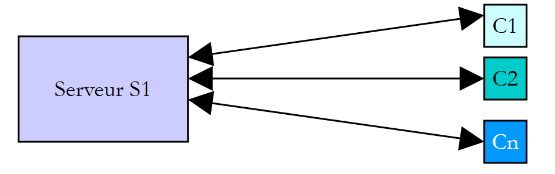
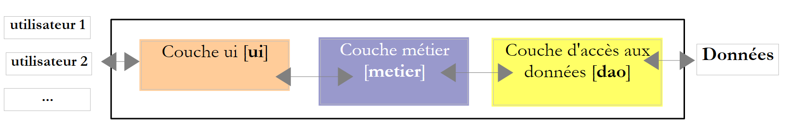

8. Les threads d'exécution
Ce chapitre présente l'exécution simultanée de plusieurs morceaux de code dans un même programme : les threads (fils d'exécution) et les outils qui permettent de les synchroniser. En 2008, la plupart des machines n'avaient qu'un processeur et le parallélisme était surtout une illusion entretenue par le système d'exploitation. Aujourd'hui, le moindre ordinateur portable a plusieurs cœurs : plusieurs threads s'exécutent réellement en même temps, ce qui rend les problèmes de synchronisation étudiés ici encore plus présents.
Les exemples sont des applications fichier unique ([dotnet run threads-01.cs]) placées dans le dossier [08-threads]. Rappelons que les directives [using] implicites de ces applications comprennent [System.Threading] et [System.Threading.Tasks] : les classes [Thread], [Lock], [Mutex], [Monitor], [Interlocked], [Task]… sont utilisables sans directive [using].
Un avertissement avant de commencer : les résultats d'un programme multithread varient d'une exécution à l'autre. L'ordre dans lequel les threads obtiennent le processeur dépend du système d'exploitation, du nombre de processeurs et de la charge de la machine. Les résultats reproduits dans ce chapitre ont été obtenus sur une machine Linux à 2 processeurs, partagée avec d'autres programmes. Si vous exécutez les exemples, vous obtiendrez des résultats de même nature, mais rarement identiques.
8.1. La classe Thread
Lorsqu'on lance une application, elle s'exécute dans un flux d'exécution appelé un thread. La classe .NET modélisant un thread est la classe [System.Threading.Thread]. Ses principaux constructeurs, propriétés et méthodes sont les suivants :
Membre | Rôle |
[Thread(ThreadStart start)] | crée un thread qui exécutera la méthode [start]. Le délégué [ThreadStart] désigne une méthode sans paramètre et sans résultat : [void M()] |
[Thread(ParameterizedThreadStart start)] | idem avec une méthode ayant un paramètre de type [object?] : [void M(object? obj)] |
[static Thread CurrentThread] | le thread qui exécute le code ayant demandé cette propriété |
[string? Name] | le nom du thread, utile pour le suivi |
[int ManagedThreadId] | un identifiant numérique unique du thread |
[bool IsBackground] | indique si le thread est un thread d'arrière-plan (voir plus loin) |
[bool IsAlive] | indique si le thread est en cours d'exécution |
[void Start()], [void Start(object? obj)] | lance l'exécution du thread, éventuellement en lui passant une information de type [object] |
[void Join()], [bool Join(TimeSpan délai)] | le thread T1 qui exécute [T2.Join()] est bloqué jusqu'à ce que le thread T2 soit terminé. La seconde forme limite la durée de l'attente |
[static void Sleep(int ms)] | le thread qui exécute la méthode est suspendu pendant [ms] millisecondes. Il perd le processeur, qui est donné à un autre thread |
Le cours de 2008 présentait aussi la méthode [Abort] qui terminait un thread de force. Elle n'existe plus en pratique : depuis .NET Core, elle lance l'exception [PlatformNotSupportedException]. Arrêter brutalement un thread pouvait laisser les données qu'il manipulait dans un état incohérent. On demande aujourd'hui à un thread de s'arrêter de façon coopérative, avec un jeton d'annulation [CancellationToken] que le thread consulte régulièrement : nous le verrons au chapitre suivant.
Voici une première application mettant en évidence l'existence d'un thread principal d'exécution, celui qui exécute les instructions de haut niveau du programme (l'équivalent de la méthode [Main]). Le programme [threads-01.cs] est le suivant :
Résultats :
Commentaires :
- ligne 4 : on récupère une référence sur le thread qui exécute le programme ;
- lignes 5-9 : on affiche son nom, on le modifie, puis on l'affiche de nouveau. Au départ, le thread principal n'a pas de nom (ligne 2 des résultats) ;
- lignes 11-15 : quelques propriétés du thread. Le thread principal a l'identifiant 1 ; c'est un thread de premier plan ([IsBackground] vaut [False]) qui n'appartient pas au pool de threads (nous verrons ces deux notions plus loin) ; il est en cours d'exécution ([Running]) ;
- ligne 16 : la machine qui a exécuté l'exemple a 2 processeurs ;
- lignes 19-23 : une boucle qui fait un affichage toutes les secondes. [Thread.Sleep(1000)] suspend le thread principal pendant une seconde. Le cours de 2008 utilisait ici une boucle infinie arrêtée par Ctrl-C ; nous nous limitons à cinq affichages. On notera le format [HH:mm:ss] (heures de 0 à 23) : le cours de 2008 utilisait [hh], qui affiche les heures de 1 à 12.
8.2. Création de threads d'exécution
Il est possible d'avoir des applications où des morceaux de code s'exécutent de façon « simultanée » dans différents threads d'exécution. Si la machine a moins de processeurs que de threads prêts à s'exécuter, les threads se partagent les processeurs : ils en disposent, chacun leur tour, pendant un court instant (quelques millisecondes). Sur une machine à plusieurs processeurs, plusieurs threads s'exécutent réellement en même temps. La portion de temps accordée à un thread dépend de divers facteurs, dont sa priorité, qui a une valeur par défaut mais peut être fixée par programmation (propriété [Priority]). Un thread qui dispose du processeur peut le libérer avant terme :
- en se mettant en attente d'un événement (fin d'un autre thread avec [Join], attente d'un signal) ;
- en se mettant en sommeil pendant un temps déterminé ([Sleep]).
Un thread T est d'abord créé par l'un des constructeurs présentés plus haut, par exemple :
où [Afficher] est une méthode ayant l'une des deux signatures suivantes :
La création d'un thread ne lance pas celui-ci :
- l'exécution du thread T est lancée par [T.Start()] : la méthode passée au constructeur de T va alors être exécutée par le thread T. Le code qui exécute l'instruction [T.Start()] n'attend pas la fin du thread T : il passe aussitôt à l'instruction suivante. On a alors deux threads qui s'exécutent en parallèle. Ils doivent souvent pouvoir communiquer entre eux pour savoir où en est le travail commun à réaliser : c'est le problème de la synchronisation des threads ;
- une fois lancé, le thread T s'exécute de façon autonome. Il s'arrête lorsque la méthode qu'il exécute est terminée ;
- on peut attendre la fin de son exécution par [T.Join()]. C'est une instruction bloquante : le thread qui l'exécute est bloqué jusqu'à ce que le thread T ait terminé son travail. C'est un premier moyen de synchronisation.
Le programme [threads-02.cs] est le suivant :
Commentaires :
- ligne 4 : on donne un nom au thread principal ;
- lignes 7-15 : on crée 5 threads et on les lance. Leurs références sont mémorisées dans un tableau afin de pouvoir les retrouver ultérieurement. Chaque thread exécute la méthode [Affiche] des lignes 22-29 ;
- ligne 11 : le nom de la méthode [Affiche] est converti automatiquement en un délégué de type [ThreadStart] (les délégués ont été présentés au chapitre précédent) ;
- ligne 15 : le thread n° i est lancé. Cette opération n'est pas bloquante : le thread n° i s'exécute en parallèle du thread principal qui l'a lancé ;
- ligne 19 : le thread principal arrive à la fin du programme ;
- lignes 22-29 : la méthode [Affiche] affiche le nom et l'identifiant du thread qui l'exécute ainsi que les heures (à la milliseconde près) de début et de fin d'exécution ;
- ligne 28 : tout thread exécutant la méthode [Affiche] s'arrête pendant 1 seconde. Le processeur est alors donné à un autre thread en attente de processeur. À la fin de la seconde d'arrêt, le thread arrêté redevient candidat au processeur. Il l'obtiendra lorsque son tour sera venu.
Résultats :
Ces résultats sont très instructifs :
- on voit tout d'abord que le lancement d'un thread n'est pas bloquant. Le thread principal a lancé 5 threads et a atteint la fin du programme (ligne 4) alors que trois des threads lancés n'avaient pas encore affiché leur premier message ;
- l'ordre d'exécution des threads est imprévisible : dans cette exécution, les threads 2 et 4 ont affiché leur message de début avant le thread 0. Le système d'exploitation a ici 6 threads et 2 processeurs ; il distribue les processeurs à ces threads selon des règles qui lui sont propres ;
- on remarque aussi que l'ordre des affichages ne suit pas toujours l'ordre des heures affichées : l'heure est calculée avant l'affichage, et entre les deux, un autre thread a pu écrire sur la console. [Console.WriteLine] est sûre vis-à-vis des threads : deux lignes écrites par deux threads ne se mélangent pas, mais leur ordre n'est pas garanti ;
- chaque thread s'arrête une seconde avec [Sleep], puis termine l'exécution de la méthode [Affiche] ;
- enfin, le programme ne s'est pas arrêté quand le thread principal a terminé son travail : le processus a attendu la fin des 5 threads. C'est le cas parce que ces threads sont des threads de premier plan (foreground) : un processus .NET se termine lorsque tous ses threads de premier plan sont terminés.
Un thread peut au contraire être déclaré thread d'arrière-plan (background) en positionnant sa propriété [IsBackground] à [true] avant de le lancer. Les threads d'arrière-plan n'empêchent pas le processus de se terminer : lorsque le dernier thread de premier plan se termine, ils sont arrêtés. Le programme [threads-03.cs] est le suivant :
Commentaires :
- ligne 14 : les 5 threads sont des threads d'arrière-plan. Les propriétés [Name] et [IsBackground] sont fixées avec un initialiseur d'objet ;
- ligne 20 : le thread principal attend 100 ms pour laisser aux threads le temps de démarrer, puis il se termine.
Résultats :
Les 5 threads ont commencé leur exécution, puis le thread principal s'est terminé (ligne 7). Les threads d'arrière-plan ont alors été arrêtés pendant leur seconde de sommeil : aucun message de fin n'est affiché. Le cours de 2008 obtenait le même résultat en terminant [Main] par [Environment.Exit(0)], instruction qui arrête tous les threads de l'application, et non pas seulement le thread qui l'exécute. Les threads du pool de threads, que nous verrons plus loin, sont des threads d'arrière-plan.
Si le thread principal veut attendre la fin des threads qu'il a créés, il utilise la méthode [Join]. Le programme [threads-04.cs] montre également une autre façon d'indiquer le code que doit exécuter un thread : une lambda.
Commentaires :
- ligne 13 : le thread exécute la lambda [() => Affiche(numero, 1000 + 100 * numero)]. Une lambda sans paramètre et sans résultat est compatible avec le délégué [ThreadStart]. Cette écriture permet d'appeler une méthode ayant des paramètres typés (ici deux [int]) au lieu de la signature imposée [void M(object? obj)] ;
- ligne 11 : la lambda utilise une copie de la variable de boucle [i]. C'est indispensable : une lambda capture la variable et non sa valeur. Dans une boucle [for], la variable [i] est unique pour toutes les itérations ; si la lambda utilisait [i], un thread qui démarre tardivement pourrait lire la valeur de [i] d'une itération suivante, voire la valeur finale 5. La variable [numero], déclarée dans le corps de la boucle, est au contraire une nouvelle variable à chaque itération (la variable d'une boucle [foreach] l'est aussi, depuis C# 5) ;
- lignes 18-21 : le thread principal attend chacun des threads. Il est d'abord bloqué en attente du thread 0, puis du thread 1, etc. Lorsqu'il sort de la boucle, les 5 threads qu'il a lancés sont terminés ;
- ligne 31 : la tâche n° i dort 1 000 + 100 × i millisecondes, afin que les threads se terminent dans un ordre connu.
Résultats :
La dernière ligne montre que le thread principal s'est terminé après les threads qu'il avait lancés, au moment où le dernier d'entre eux s'est terminé.
8.3. Intérêt des threads
Maintenant que nous avons mis en évidence l'existence d'un thread par défaut, celui qui exécute le programme principal, et que nous savons comment en créer d'autres, arrêtons-nous sur l'intérêt des threads. Ils ont deux usages principaux :
- utiliser tous les processeurs de la machine pour un calcul long : on découpe le travail en morceaux confiés à des threads différents. Nous le ferons avec la bibliothèque [Parallel] à la fin de ce chapitre ;
- faire plusieurs choses à la fois, en particulier lorsque certaines d'entre elles consistent surtout à attendre (une réponse du réseau, une lecture sur disque, une saisie de l'utilisateur). C'est le cas des applications client / serveur de l'internet que nous présenterons dans un prochain chapitre.
Dans une application client / serveur de l'internet, un serveur situé sur une machine S1 répond aux demandes de clients situés sur des machines distantes C1, C2, ..., Cn :

Nous utilisons tous les jours des applications de l'internet correspondant à ce schéma : services web, messagerie électronique, transfert de fichiers... Dans le schéma ci-dessus, le serveur S1 doit servir les clients Ci de façon simultanée. Si nous prenons l'exemple d'un serveur de fichiers, nous savons qu'un transfert peut parfois prendre plusieurs minutes. Il est hors de question qu'un client monopolise tout seul le serveur pendant une telle durée. Une solution classique est que le serveur crée autant de threads d'exécution qu'il y a de clients. Chaque thread est alors chargé de s'occuper d'un client particulier :

Dans la pratique, le serveur utilise un pool de threads avec un nombre limité de threads, présenté plus loin. Les serveurs actuels vont plus loin : pendant qu'un client attend une réponse du réseau, aucun thread ne lui est réservé. C'est la programmation asynchrone, objet du chapitre suivant, qui le permet.
8.4. Échange d'informations entre threads
Dans les exemples précédents, les threads exécutaient une méthode sans paramètre. Le constructeur [Thread(ParameterizedThreadStart)] accepte une méthode de signature [void M(object? obj)]. Cela permet de transmettre de l'information au thread lancé :
lance le thread [t] qui exécute alors la méthode qui lui a été associée par construction, en lui passant le paramètre effectif [obj1]. Le programme [threads-05.cs] est le suivant :
Commentaires :
- lignes 46-52 : l'information passée aux threads est un objet [Donnees]. Il y a là un échange d'informations dans les deux sens entre le thread lanceur et le thread lancé. [Debut] et [Duree] sont des propriétés [init] : elles ne peuvent être fixées qu'à la création de l'objet :
- [Debut] : heure de début d'exécution du thread, fixée par le thread lanceur ;
- [Duree] : durée en secondes du sommeil du thread lancé, fixée par le thread lanceur ;
- [Fin] : heure de fin d'exécution du thread, fixée par le thread lancé ;
- ligne 12 : chaque thread est associé à la méthode [Dormir] des lignes 32-42, dont la signature [void Dormir(object? infos)] correspond au délégué [ParameterizedThreadStart] ;
- lignes 14-16 : un objet [Donnees] est créé, mémorisé dans le tableau [donnees], puis passé à la méthode [Start] qui lance le thread ;
- lignes 20-26 : le thread principal attend la fin de chacun des threads qu'il a lancés, puis récupère l'objet [donnees[i]] du thread n° i et en affiche le contenu ;
- ligne 35 : le paramètre reçu est de type [object?] ; le filtrage par motif [infos is not Donnees data] vérifie son type réel et le récupère dans la variable typée [data]. Le cours de 2008 faisait un transtypage [(Data)infos], qui lance une exception si l'objet n'a pas le type attendu ;
- ligne 40 : la propriété [Duree] du paramètre fixe la durée du sommeil ;
- ligne 42 : la propriété [Fin] du paramètre est renseignée.
Résultats :
Cet exemple montre que deux threads peuvent échanger de l'information :
- le thread lanceur peut contrôler l'exécution du thread lancé en lui donnant des informations ;
- le thread lancé peut rendre des résultats au thread lanceur.
Pour que le thread lanceur sache à quel moment les résultats qu'il attend sont disponibles, il faut qu'il soit averti de la fin du thread lancé. Ici, il a attendu sa fin avec la méthode [Join]. [Join] garantit de plus que les écritures faites par le thread lancé sont visibles par le thread qui l'attend. Nous verrons d'autres façons de se synchroniser dans la suite.
Avec une lambda, il n'est plus nécessaire de passer par le type [object] : la lambda capture directement des variables typées. Les lignes 12-16 pourraient s'écrire :
avec une méthode [static void Dormir(Donnees data)] qui n'a plus besoin de vérifier le type de son paramètre. C'est l'écriture la plus courante aujourd'hui.
8.5. Accès concurrents à des ressources partagées
8.5.1. Accès concurrents non synchronisés
Dans le paragraphe précédent, l'information n'était échangée que par deux threads et à des moments bien précis : on avait là un classique passage de paramètres. Il existe d'autres cas où une information est partagée par plusieurs threads qui peuvent vouloir la lire ou la mettre à jour au même moment. Se pose alors le problème de l'intégrité de cette information. Supposons que l'information partagée soit une structure S avec diverses informations I1, I2, ..., In :
- un thread T1 commence à mettre à jour la structure S : il modifie le champ I1 et est interrompu avant d'avoir terminé la mise à jour complète de la structure S ;
- un thread T2 qui récupère le processeur lit alors la structure S pour prendre des décisions. Il lit une structure dans un état instable : certains champs sont à jour, d'autres pas.
On appelle cette situation l'accès concurrent à une ressource partagée, ici la structure S. Elle est souvent délicate à gérer. Prenons l'exemple suivant pour illustrer les problèmes qui peuvent surgir :
- une application va générer n threads, n étant passé en paramètre ;
- la ressource partagée est un compteur qui doit être incrémenté par chaque thread généré ;
- à la fin de l'application, la valeur du compteur est affichée. On devrait donc trouver n.
Le programme [threads-06.cs] est le suivant :
Commentaires :
- lignes 4-8 : le nombre de threads est passé en argument. La condition de la ligne 5 rassemble toutes les vérifications : il faut un argument, c'est un entier ([int.TryParse]) et il est compris entre 1 et 100 (motif relationnel [nbThreads is < 1 or > nbMaxThreads]). Le programme rend le code de sortie 1 en cas d'erreur, 0 sinon (ligne 25) ;
- lignes 28-43 : la ressource partagée est la propriété statique [Compteur.Valeur]. Le compteur est encapsulé dans une classe statique, avec la méthode [Incrementer] exécutée par chaque thread. Une instruction de haut niveau ne peut pas déclarer de champ : les données partagées par les threads sont donc des membres statiques d'une classe ;
- ligne 37 : le compteur est lu ;
- ligne 40 : le thread s'arrête 1 s. Il perd donc le processeur ;
- ligne 42 : le compteur est incrémenté.
L'arrêt d'une seconde n'est là que pour forcer le thread à perdre le processeur entre la lecture et l'écriture du compteur. Dans la pratique, rien n'assure qu'un thread ne sera pas interrompu entre ces deux moments, et sur une machine multiprocesseur, deux threads peuvent même lire le compteur exactement au même moment. Le sommeil d'une seconde ne fait que systématiser ce risque.
Pour passer des arguments à une application fichier unique, on les place après [--] :
À la lecture de ces résultats, on voit bien ce qui se passe :
- un premier thread lit le compteur. Il trouve 0. Il s'arrête 1 s et perd donc le processeur ;
- un second thread lit lui aussi la valeur du compteur. Elle est toujours à 0 puisque le thread précédent ne l'a pas encore incrémentée. Il s'arrête lui aussi 1 s ;
- en moins d'une seconde, les 5 threads ont le temps de lire tous la valeur 0 ;
- lorsqu'ils se réveillent, ils incrémentent la valeur 0 qu'ils ont lue et écrivent tous la valeur 1 dans le compteur, ce que confirme la dernière ligne (ligne 12).
On peut objecter que l'exemple est artificiel. Supprimons donc le [Sleep] et utilisons l'opérateur [++] qui donne l'illusion d'une instruction unique. Le programme [threads-07.cs] est le suivant :
Commentaires :
- lignes 4-5 : le nombre de threads (4 par défaut) et le nombre d'incrémentations faites par chaque thread (50 millions par défaut) peuvent être passés en arguments. L'expression [args.Length > 0 && int.TryParse(args[0], out int n) ? n : 4] rend l'argument s'il existe et est valide, la valeur par défaut sinon. Le séparateur [_] rend lisible la constante [50_000_000] ;
- ligne 20 : chaque thread incrémente le compteur partagé, sans aucune pause ;
- ligne 38 : le compteur est cette fois un champ ;
- ligne 32 : le format [N0] affiche un nombre entier avec séparateur des milliers.
Résultats :
Des dizaines de millions de mises à jour ont été perdues, et leur nombre varie d'un essai à l'autre. L'opération de haut niveau [Compteur.Valeur++] est en effet traduite en plusieurs instructions élémentaires du processeur : lire la valeur en mémoire, l'incrémenter dans un registre, écrire le résultat en mémoire. Si deux threads lisent la même valeur avant que l'un d'eux n'ait écrit la sienne, une incrémentation est perdue, exactement comme dans l'exemple précédent. Il faut beaucoup d'itérations pour l'observer : avec un million d'incrémentations par thread, chaque thread a souvent fini son travail avant que le suivant ait démarré, et le résultat est juste. C'est ce qui rend ces erreurs redoutables : un programme peut fonctionner pendant des mois et se tromper le jour où la machine est plus chargée.
D'où vient le problème ? Un thread a lu une valeur périmée parce qu'un autre avait été interrompu, ou travaillait en même temps sur un autre processeur, avant d'avoir terminé son travail qui était de mettre à jour le compteur. Cela nous amène aux notions de ressource critique et de section critique d'un programme :
- une ressource critique est une ressource qui ne peut être détenue que par un thread à la fois. Ici, la ressource critique est le compteur ;
- une section critique d'un programme est une séquence d'instructions du flux d'exécution d'un thread au cours de laquelle il accède à une ressource critique. On doit assurer qu'au cours de cette section critique, il est le seul à avoir accès à la ressource.
Dans le programme [threads-06.cs], la section critique est le code situé entre la lecture du compteur et l'écriture de sa nouvelle valeur :
Pour exécuter ce code, un thread doit être assuré d'être seul. Il peut être interrompu, mais pendant cette interruption, un autre thread ne doit pas pouvoir exécuter ce même code. La plateforme .NET offre divers outils pour assurer l'entrée unitaire dans les sections critiques de code. Nous en voyons quelques-uns maintenant.
8.5.2. La clause lock et le type Lock
La clause [lock] délimite une section critique de la façon suivante :
[verrou] est un objet visible par tous les threads exécutant la section critique. La clause [lock] assure qu'un seul thread à la fois exécute la section critique : un thread qui arrive devant un verrou détenu par un autre thread est bloqué jusqu'à ce que le verrou soit libéré.
Depuis C# 13 et .NET 9, l'objet de synchronisation est de préférence une instance du type [System.Threading.Lock], conçu pour cet usage. L'exemple précédent est réécrit comme suit dans [threads-08.cs] :
Commentaires :
- ligne 36 : [verrou] est l'objet qui va permettre la synchronisation de tous les threads. Il est [readonly] : la référence ne doit jamais changer, sinon deux threads pourraient verrouiller deux objets différents ;
- lignes 44-53 : la section critique de la méthode [Incrementer] est encadrée par la clause [lock]. Le thread garde le verrou pendant son sommeil d'une seconde : les autres threads ne peuvent pas entrer ;
- lignes 20-24 : le thread principal attend les threads dans l'ordre inverse de leur création.
Résultats avec 3 threads :
- les trois threads demandent à entrer dans la section critique, presque au même instant ;
- un seul y entre, ici le thread 0 (l'ordre d'entrée n'est pas garanti : ce n'est pas forcément le premier arrivé qui entre le premier). Il lit le compteur, dort une seconde, écrit la nouvelle valeur et quitte la section critique ;
- les deux autres threads sont bloqués tant que le premier n'est pas sorti de la section critique, puis passent l'un après l'autre. Chacun lit la valeur écrite par le précédent ;
- le thread principal attendait la fin du thread 2. Quand il en est prévenu, il attend la fin du thread 1, qui est déjà terminé : il en est prévenu immédiatement. Il en est de même pour le thread 0 ;
- le nombre de threads est correct (ligne 20).
Le compilateur traduit la clause [lock (verrou) { ... }] sur un objet [Lock] par :
[EnterScope] acquiert le verrou et rend une structure dont la méthode [Dispose], appelée à la sortie du bloc [using], libère le verrou, même si la section critique lance une exception. Le type [Lock] offre aussi les méthodes [Enter], [TryEnter] et [Exit] pour les cas où le verrou ne peut pas être géré par un bloc.
Avant .NET 9, et dans beaucoup de code existant, le verrou était un objet quelconque, généralement de type [object] :
Cette forme reste valide : tout objet .NET peut servir de verrou. Le compilateur la traduit alors par des appels à la classe [Monitor] que nous étudierons plus loin :
Le type [Lock] est plus efficace et rend l'intention explicite. On verrouille toujours un objet privé : verrouiller un objet visible de l'extérieur ([this], un type avec [typeof(...)], une chaîne) permettrait à du code étranger de prendre le même verrou et de bloquer le nôtre.
8.5.3. La classe Mutex
La classe [System.Threading.Mutex] permet elle aussi de délimiter des sections critiques. Elle diffère de la clause [lock] en termes de visibilité :
- la clause [lock] synchronise des threads d'une même application ;
- la classe [Mutex] peut synchroniser des threads d'applications (de processus) différentes, si on lui donne un nom.
Un [Mutex] est un objet du système d'exploitation : son utilisation est beaucoup plus coûteuse qu'un [lock]. Entre les threads d'un même processus, on lui préfère donc [lock] ; [Mutex] sert surtout entre processus. Nous utiliserons les constructeurs et méthodes suivants :
Membre | Rôle |
[Mutex()] | crée un Mutex M anonyme, utilisable par les threads du processus |
[Mutex(bool initiallyOwned, string name)] | crée ou ouvre le Mutex nommé [name], partagé par tous les processus qui utilisent ce nom |
[bool WaitOne()] | le thread T1 qui exécute [M.WaitOne()] demande la propriété du Mutex M. Si M n'est détenu par aucun thread, il est donné à T1. Si un thread T2 fait ensuite la même opération, il est bloqué : un Mutex ne peut appartenir qu'à un thread. T2 sera débloqué lorsque T1 libérera M. Plusieurs threads peuvent ainsi être bloqués en attente de M |
[bool WaitOne(TimeSpan délai)] | idem, mais l'attente est limitée à [délai]. La méthode rend [false] si le Mutex n'a pas pu être obtenu |
[void ReleaseMutex()] | le thread qui détient M en abandonne la propriété. L'un des threads en attente de M l'obtient alors |
La synchronisation d'une section critique se fait ainsi :
Il ne faut pas oublier de libérer un Mutex, sinon les threads qui l'attendent restent bloqués indéfiniment : c'est pourquoi la libération est faite dans une clause [finally], exécutée qu'il y ait eu exception ou non. Le programme [threads-09.cs] reprend l'exemple précédent avec un Mutex :
Commentaires :
- ligne 33 : l'objet de synchronisation des threads est désormais un Mutex ;
- ligne 41 : début de la section critique. Le thread est bloqué jusqu'à ce que le Mutex soit libre ;
- lignes 42-57 : parce qu'un Mutex doit toujours être libéré, exception ou pas, la section critique est placée dans un [try] dont la clause [finally] libère le Mutex (ligne 57).
Résultats :
Les résultats sont analogues aux précédents : les threads passent un par un dans la section critique et le compteur final est juste.
L'intérêt propre du Mutex apparaît avec un Mutex nommé. Le programme [threads-10.cs] est lancé deux fois, dans deux processus différents, qui se partagent une section critique :
Commentaires :
- ligne 4 : le nom du Mutex. Tous les processus qui ouvrent un Mutex de ce nom utilisent le même objet du système. Le préfixe [Global] demande que le Mutex soit visible de toutes les sessions de la machine (le préfixe par défaut [Local] le limite à la session de l'utilisateur) ;
- ligne 9 : le Mutex nommé est créé s'il n'existe pas encore, ouvert sinon. Le premier paramètre [false] indique que le processus ne demande pas à le posséder dès sa création. La déclaration [using] libère l'objet [Mutex] à la fin du programme ;
- ligne 12 : le processus tente d'obtenir le Mutex sans attendre ([TimeSpan.Zero]). S'il n'y parvient pas, il l'indique puis l'attend sans limite de temps (ligne 16) ;
- lignes 18-27 : la section critique, qui dure 3 secondes, puis la libération du Mutex.
Le script de capture lance le processus A, attend 1,5 seconde, puis lance le processus B. Résultats du processus A :
Résultats du processus B :
Le processus B a trouvé le Mutex détenu par le processus A et a attendu. Il l'a obtenu à l'instant même où A l'a libéré. Un usage classique du Mutex nommé est d'empêcher le lancement de deux instances d'une même application : la seconde instance, ne pouvant obtenir le Mutex, s'arrête aussitôt. Si un processus se termine sans libérer un Mutex qu'il détient, le Mutex est dit abandonné : le prochain [WaitOne] l'obtient, mais lance l'exception [AbandonedMutexException] pour signaler que la ressource protégée est peut-être dans un état incohérent.
8.5.4. La classe AutoResetEvent
Un objet [AutoResetEvent] est une barrière qui ne laisse passer qu'un thread à la fois. On le construit de la façon suivante :
Le booléen [etat] indique l'état fermé ([false]) ou ouvert ([true]) de la barrière. Un thread voulant passer la barrière l'indique de la façon suivante :
- si la barrière est ouverte, le thread passe et la barrière se referme automatiquement derrière lui (d'où le nom de la classe). Si plusieurs threads attendaient, un seul passe ;
- si la barrière est fermée, le thread est bloqué. Un autre thread l'ouvrira lorsque le moment sera venu. Ce moment dépend entièrement du problème traité. La barrière est ouverte par l'opération :
Un thread peut aussi fermer une barrière par [barriere.Reset()]. À la différence d'un Mutex, une barrière n'appartient à aucun thread : n'importe quel thread peut l'ouvrir. Si, dans l'exemple précédent, on remplace le Mutex par un [AutoResetEvent], le code devient le suivant [threads-11.cs] :
Commentaires :
- ligne 39 : la barrière est créée fermée. Elle sera ouverte par le thread principal, ligne 23 ;
- ligne 19 : le thread principal attend une demi-seconde pour laisser les threads arriver devant la barrière ;
- ligne 47 : le thread chargé d'incrémenter le compteur demande l'autorisation d'entrer dans la section critique. Les différents threads s'accumulent devant la barrière fermée. Lorsque le thread principal l'ouvre, l'un des threads en attente passe et la barrière se referme ;
- ligne 63 : lorsqu'il a terminé son travail, le thread rouvre la barrière, permettant à un autre thread d'entrer.
Résultats :
On obtient des résultats analogues aux précédents. On voit que les trois threads attendent devant la barrière jusqu'à ce que le thread principal l'ouvre (ligne 5).
8.5.5. Les classes ManualResetEventSlim et SemaphoreSlim
Deux autres outils de synchronisation complètent les précédents.
Un objet [ManualResetEventSlim] est une barrière qui, une fois ouverte par [Set], reste ouverte et laisse passer tous les threads, jusqu'à ce qu'on la referme explicitement par [Reset]. C'est le « signal de départ » d'une course. Le suffixe [Slim] désigne les versions légères des outils de synchronisation, apparues avec .NET 4 : elles ne font appel au système d'exploitation que si l'attente se prolonge et ne fonctionnent qu'à l'intérieur d'un processus. Le programme [threads-12.cs] est le suivant :
Commentaires :
- ligne 4 : la barrière est créée fermée ;
- ligne 15 : chaque thread attend l'ouverture de la barrière ;
- ligne 26 : le thread principal ouvre la barrière après une seconde ;
- ligne 32 : la propriété [IsSet] indique si la barrière est ouverte.
Résultats :
Les quatre coureurs sont partis ensemble, à la milliseconde près, après le signal de départ. Avec un [AutoResetEvent], un seul serait parti.
Un sémaphore est une barrière munie d'un compteur de places : il laisse entrer au plus N threads à la fois dans une section de code. C'est utile pour limiter l'usage d'une ressource disponible en quantité limitée (connexions à une base de données, requêtes simultanées vers un serveur…). Le programme [threads-13.cs] est le suivant :
Commentaires :
- ligne 4 : le sémaphore a 2 places ;
- ligne 15 : un thread demande une place. S'il en reste, il la prend et continue ; sinon il est bloqué jusqu'à ce qu'une place se libère ;
- ligne 18 : le nombre de places encore libres ;
- ligne 26 : le thread rend sa place, dans une clause [finally].
Résultats :
Les cinq threads demandent une place ; deux l'obtiennent immédiatement, les trois autres attendent. Chaque fois qu'un thread libère sa place, un thread en attente l'obtient. Il n'y a jamais plus de deux threads dans la section de code. Un sémaphore à une seule place joue le rôle d'un verrou. La classe [SemaphoreSlim] a aussi une méthode [WaitAsync] utilisable avec [await], que l'on rencontrera au chapitre suivant ; la classe [Semaphore] (sans [Slim]), plus coûteuse, peut comme [Mutex] être nommée et partagée entre processus, mais seulement sous Windows.
8.5.6. La classe Interlocked
La classe [Interlocked] rend atomiques des opérations simples sur une variable : l'opération est exécutée entièrement par le thread, sans qu'aucun autre thread puisse observer ou modifier la variable au milieu de l'opération. Les outils précédents ([lock], [Mutex], [AutoResetEvent]) ont tous pour but de rendre atomique un groupe d'opérations, au prix du blocage des autres threads. Pour des opérations simples mais fréquentes, la classe [Interlocked] évite ce blocage : elle utilise des instructions spéciales du processeur. Ses principales méthodes statiques sont les suivantes :
Méthode | Rôle |
[int Increment(ref int x)] | incrémente [x] de 1 et rend la nouvelle valeur |
[int Decrement(ref int x)] | décrémente [x] de 1 et rend la nouvelle valeur |
[int Add(ref int x, int valeur)] | ajoute [valeur] à [x] et rend la nouvelle valeur |
[int Exchange(ref int x, int valeur)] | affecte [valeur] à [x] et rend l'ancienne valeur |
[int CompareExchange(ref int x, int valeur, int comparant)] | affecte [valeur] à [x] seulement si [x] vaut [comparant] ; rend l'ancienne valeur de [x] |
[long Read(ref long x)] | lit de façon atomique une valeur de 64 bits (utile sur un processeur 32 bits) |
Ces méthodes existent pour les types [int], [long], [uint], [ulong] et, pour [Exchange] et [CompareExchange], pour d'autres types dont les références ; [And] et [Or] (.NET 5) appliquent atomiquement un « et » ou un « ou » bit à bit. Le paramètre est passé par référence ([ref]) : [Interlocked] doit agir sur la variable elle-même, et non sur une copie. Pour cette raison, la variable doit être un champ ou une variable locale ; une propriété ne peut pas être passée par référence.
Le programme [threads-14.cs] reprend l'expérience du programme [threads-07.cs] et compare trois façons d'incrémenter le compteur partagé :
Commentaires :
- ligne 3 : la classe [Stopwatch], qui mesure des durées, est dans l'espace de noms [System.Diagnostics] ;
- lignes 11-13 : la fonction locale [Mesurer] est appelée avec trois méthodes d'incrémentation différentes, passées sous forme de délégué [Action] ;
- lignes 16-42 : la fonction [Mesurer] lance [nbThreads] threads qui appellent chacun [nbIncrements] fois la méthode reçue, et mesure le temps total avec un [Stopwatch]. Le format [{Compteur.Valeur,12:N0}] aligne la valeur à droite sur 12 caractères ;
- lignes 20-26 et 36 : les threads attendent tous derrière une barrière [ManualResetEventSlim], ouverte une fois qu'ils sont tous lancés. Ils commencent ainsi leur travail en même temps, ce qui rend les accès concurrents beaucoup plus probables qu'avec des threads lancés l'un après l'autre ;
- ligne 49 : le compteur est un champ, et non une propriété, pour pouvoir être passé par référence à [Interlocked.Increment] ;
- ligne 53 : l'incrémentation non synchronisée ;
- lignes 56-60 : l'incrémentation dans une section critique protégée par un [Lock] ;
- ligne 65 : l'incrémentation atomique.
Résultats :
- sans synchronisation, le résultat est faux, une fois de plus ;
- les deux autres méthodes donnent le bon résultat ;
- [Interlocked] est nettement plus rapide que [lock] dans cette exécution. Le verrou coûte cher ici parce que quatre threads se disputent sans cesse le même verrou pour une opération minuscule. Les durées mesurées dépendent beaucoup de la machine et de sa charge : seul leur ordre de grandeur est significatif.
La méthode [CompareExchange] est la brique de base des algorithmes « sans verrou » : on lit la valeur, on calcule la nouvelle, puis on ne l'écrit que si la variable n'a pas changé entre-temps, en recommençant sinon. Les collections concurrentes présentées plus loin l'utilisent abondamment.
8.6. Accès concurrents à des ressources partagées multiples
8.6.1. L'interblocage
Dans nos exemples précédents, une unique ressource était partagée par les différents threads. La situation se complique s'il y en a plusieurs et qu'elles sont dépendantes les unes des autres. Une situation d'interblocage (deadlock) peut notamment survenir : deux threads s'attendent mutuellement. Considérons les actions suivantes qui se suivent dans le temps :
- un thread T1 obtient le verrou V1 pour accéder à une ressource partagée R1 ;
- un thread T2 obtient le verrou V2 pour accéder à une ressource partagée R2 ;
- le thread T1 demande le verrou V2. Il est bloqué ;
- le thread T2 demande le verrou V1. Il est bloqué.
Les threads T1 et T2 s'attendent mutuellement, et indéfiniment. Plusieurs solutions sont possibles :
- demander les deux ressources en même temps à l'aide d'un verrou unique. Ce n'est pas toujours possible si cela entraîne une mobilisation longue d'une ressource coûteuse ;
- prendre les verrous toujours dans le même ordre : si tous les threads prennent V1 avant V2, l'interblocage est impossible. C'est la règle la plus utilisée ;
- un thread ayant V1 et ne pouvant obtenir V2 relâche V1 pour éviter l'interblocage.
Le programme [threads-15.cs] provoque un interblocage et met en œuvre la dernière solution :
Commentaires :
- lignes 4-5 : les verrous des deux ressources. Ce sont ici des variables locales, capturées par les lambdas des lignes 8-10 ;
- ligne 8 : le thread T1 prend R1 puis demande R2 ; il patiente au plus 2 secondes ;
- ligne 10 : le thread T2 prend R2 puis demande R1, c'est-à-dire dans l'ordre inverse ; il patiente au plus 5 secondes ;
- ligne 21 : le thread prend sa première ressource ;
- ligne 25 : il attend une demi-seconde, ce qui laisse à l'autre thread le temps de prendre sa propre première ressource : l'interblocage est alors certain ;
- ligne 28 : au lieu d'un [lock] qui attendrait indéfiniment, le thread demande le second verrou avec un délai d'attente maximal. [TryEnter] rend [true] si le verrou a été obtenu, [false] si le délai a expiré ;
- ligne 36 : un verrou obtenu par [TryEnter] doit être libéré par [Exit], dans une clause [finally] ;
- lignes 39-41 : si le second verrou n'a pas pu être obtenu, le thread abandonne. En sortant du bloc [lock], il relâche sa première ressource.
Résultats :
Chacun des deux threads a obtenu sa première ressource puis demandé la seconde : ils sont en interblocage. Au bout de 2 secondes, T1 renonce et relâche R1 ; T2, qui attendait encore, obtient aussitôt R1 et peut faire son travail. Sans délai d'attente, le programme ne se serait jamais terminé.
8.6.2. Un exemple : lecteurs et écrivains
Considérons l'exemple suivant :
- on a un tableau dans lequel des threads viennent déposer des données (les écrivains) et d'autres viennent les lire (les lecteurs) ;
- les écrivains sont égaux entre eux mais exclusifs : un seul écrivain à la fois peut déposer ses données dans le tableau ;
- les lecteurs sont égaux entre eux mais exclusifs : un seul lecteur à la fois peut lire les données déposées dans le tableau ;
- un lecteur ne peut lire les données du tableau que lorsqu'un écrivain en a déposé, et un écrivain ne peut déposer de nouvelles données dans le tableau que lorsque celles qui y sont ont été lues par un lecteur.
On peut distinguer deux ressources partagées :
- le tableau en écriture : un seul écrivain à la fois doit y avoir accès ;
- le tableau en lecture : un seul lecteur à la fois doit y avoir accès.
et un ordre d'utilisation de ces ressources :
- un lecteur doit toujours passer après un écrivain ;
- un écrivain doit toujours passer après un lecteur, sauf la première fois.
On peut contrôler l'accès à ces deux ressources avec deux barrières de type [AutoResetEvent] :
- la barrière [peutEcrire] contrôle l'accès des écrivains au tableau ;
- la barrière [peutLire] contrôle l'accès des lecteurs au tableau ;
- la barrière [peutEcrire] est créée ouverte, laissant passer un premier écrivain et bloquant tous les autres ;
- la barrière [peutLire] est créée fermée, bloquant tous les lecteurs ;
- lorsqu'un écrivain a terminé son travail, il ouvre la barrière [peutLire] pour laisser entrer un lecteur ;
- lorsqu'un lecteur a terminé son travail, il ouvre la barrière [peutEcrire] pour laisser entrer un écrivain.
Le programme [threads-16.cs] illustrant cette synchronisation est le suivant :
Commentaires :
- lignes 7-14 : création et lancement de deux threads lecteurs puis de deux threads écrivains. On ne garde pas de référence sur les threads : le thread principal ne les attend pas ;
- ligne 17 : le thread principal se termine aussitôt. Le processus continue jusqu'à la fin des quatre threads, qui sont des threads de premier plan ;
- ligne 23 : le tableau [data] est la ressource partagée entre les threads lecteurs et écrivains ;
- ligne 25 : la barrière [peutLire] avertit les lecteurs qu'ils peuvent lire le tableau. Elle est ouverte par l'écrivain qui a rempli le tableau. Elle est créée fermée : il faut qu'un écrivain remplisse d'abord le tableau ;
- ligne 27 : la barrière [peutEcrire] avertit les écrivains qu'ils peuvent écrire dans le tableau. Elle est ouverte par le lecteur qui a lu la totalité du tableau. Elle est créée ouverte : le tableau est libre en écriture au départ ;
- ligne 35 : un lecteur attend qu'un écrivain signale que le tableau a été rempli. Lorsque ce signal arrive, un seul des lecteurs en attente passe ;
- lignes 37-41 : lecture du tableau, avec une pause d'une demi-seconde à chaque élément pour forcer le thread à perdre le processeur ;
- ligne 44 : le lecteur indique aux écrivains que le tableau a été lu et qu'il peut être rempli de nouveau ;
- la méthode [Ecrire] est symétrique de la méthode [Lire] ;
- ligne 61 : les nombres écrits sont tirés au hasard. La propriété [Random.Shared] (.NET 6) fournit un générateur partagé, utilisable sans risque par plusieurs threads. Le cours de 2008 partageait entre les threads un objet [Random] ordinaire, dont les méthodes ne sont pas prévues pour être appelées simultanément par plusieurs threads.
Résultats :
On peut remarquer les points suivants :
- il n'y a qu'un lecteur à la fois, bien que celui-ci perde le processeur dans la section critique [Lire] ;
- il n'y a qu'un écrivain à la fois, bien que celui-ci perde le processeur dans la section critique [Ecrire] ;
- un lecteur ne lit que lorsqu'il y a quelque chose à lire dans le tableau ;
- un écrivain n'écrit que lorsque le tableau a été entièrement lu ;
- en revanche, on ne maîtrise pas l'ordre de passage : rien n'imposait que l'écrivain E0 passe avant l'écrivain E1, ni que le lecteur L0 passe avant le lecteur L1. Une autre exécution peut donner un autre ordre.
8.6.3. La classe Monitor
Dans l'exemple précédent, lorsque les écrivains sont bloqués sur l'instruction [peutEcrire.WaitOne()], l'un d'entre eux, n'importe lequel, est débloqué par l'opération [peutEcrire.Set()]. Si l'on veut ouvrir la barrière à un écrivain en particulier, les choses deviennent plus compliquées.
On peut considérer l'analogie avec un établissement accueillant du public à des guichets. Lorsque le client arrive, il prend un ticket numéroté au distributeur puis va s'asseoir. Les clients sont appelés par leur numéro via un haut-parleur. Pendant son attente, le client fait ce qu'il veut : il peut lire ou somnoler. Il est réveillé chaque fois que le haut-parleur annonce un numéro. S'il s'agit du sien, le client se lève et va au guichet ; sinon, il reprend ce qu'il faisait. On peut fonctionner de façon analogue avec des threads. Prenons l'exemple des écrivains :
Au guichet | Avec des threads |
plusieurs écrivains attendent pour un même guichet | leurs threads sont bloqués |
le guichet se libère et le numéro de l'écrivain suivant est appelé | le thread qui utilisait le tableau en lecture indique aux écrivains que le tableau est disponible. Lui ou un autre thread a fixé l'écrivain qui doit passer |
chaque écrivain regarde son numéro ; seul celui qui a le numéro appelé va au guichet, les autres se remettent en attente | chaque thread vérifie s'il est l'élu. Si oui, il passe la barrière ; sinon, il se remet en attente |
La classe [Monitor] permet de mettre en œuvre ce scénario. Ses méthodes statiques sont les suivantes :
Méthode | Rôle |
[Enter(object jeton)] | demande le jeton : le thread l'obtient s'il est libre, sinon il est bloqué jusqu'à ce qu'il le soit |
[bool TryEnter(object jeton, TimeSpan délai)] | idem, avec un délai d'attente maximal |
[Exit(object jeton)] | rend le jeton |
[bool Wait(object jeton)] | rend le jeton et bloque le thread jusqu'à ce qu'un autre thread signale un changement par [Pulse] ou [PulseAll] ; le thread doit alors récupérer le jeton avant de poursuivre |
[Pulse(object jeton)] | réveille l'un des threads bloqués par [Wait] sur ce jeton |
[PulseAll(object jeton)] | réveille tous les threads bloqués par [Wait] sur ce jeton |
Nous décrivons maintenant une construction standard (pattern), proposée dans le chapitre « Threading » du livre de J. et B. Albahari, [C# in a Nutshell], capable de résoudre les problèmes de barrière avec condition d'entrée.
Les threads qui se partagent une ressource (le guichet) y accèdent via un objet que nous appellerons un jeton. Pour franchir la barrière qui mène au guichet, il faut avoir le jeton, et il n'y en a qu'un. Les threads doivent donc se passer le jeton :
Pour aller au guichet, un thread demande d'abord le jeton par [Monitor.Enter(jeton)], ou plus simplement avec une clause [lock]. S'il a obtenu le jeton, il vérifie qu'il remplit la condition pour aller au guichet :
Si le thread n'est pas celui qui est attendu au guichet, il laisse son tour en rendant le jeton par [Monitor.Wait(jeton)] et passe dans l'état bloqué. Il sera réveillé lorsqu'un autre thread signalera un changement de la condition d'accès ; il récupérera alors le jeton et vérifiera de nouveau la condition. C'est pourquoi le test est une boucle [while] et non un simple [if]. L'opération [Monitor.Wait(jeton)] ne peut être faite que par un thread qui possède le jeton ; sinon, une exception [SynchronizationLockException] est lancée. Dans ce schéma, le jeton n'est relâché qu'après le passage au guichet.
Le thread qui modifie la condition d'accès au guichet doit, lui aussi, posséder le jeton, et avertir les threads en attente :
Le réveil signifie que les threads en attente deviennent candidats au jeton ; ils ne le reçoivent pas immédiatement. Le jeton n'est disponible qu'à la fin du bloc [lock]. Tous les threads réveillés vont alors recevoir le jeton à tour de rôle, dans un ordre indéterminé, ce qui leur donne l'occasion de vérifier de nouveau la condition d'accès. Le premier qui la vérifie garde le jeton et va au guichet.
Une remarque importante : les méthodes [Wait], [Pulse] et [PulseAll] de [Monitor] s'appliquent à un objet verrouillé par [lock (objet)] ou [Monitor.Enter(objet)]. Elles ne fonctionnent pas avec le type [Lock] de .NET 9, qui n'offre pas d'équivalent. Les jetons de ce paragraphe sont donc des objets de type [object].
Muni de ces informations, nous pouvons réécrire l'application lecteurs / écrivains en fixant un ordre de passage des lecteurs et des écrivains à leurs guichets respectifs [threads-17.cs] :
1 2 3 4 5 6 7 8 9 10 11 12 13 14 15 16 17 18 19 20 21 22 23 24 25 26 27 28 29 30 31 32 33 34 35 36 37 38 39 40 41 42 43 44 45 46 47 48 49 50 51 52 53 54 55 56 57 58 59 60 61 62 63 64 65 66 67 68 69 70 71 72 73 74 75 76 77 78 79 80 81 82 83 84 85 86 87 88 89 90 91 92 93 94 95 96 97 98 99 100 101 102 103 104 105 106 107 108 109 110 111 112 113 114 115 116 117 118 119 120 121 122 | |
L'accès au guichet de lecture est conditionné par les éléments suivants :
- ligne 36 : le jeton [peutLire] ;
- ligne 39 : le booléen [lectureAutorisee] ;
- ligne 44 : le tableau ordonné des noms des lecteurs. Les lecteurs vont au guichet de lecture dans l'ordre de ce tableau ;
- ligne 41 : [lecteurSuivant] est l'indice dans ce tableau du prochain lecteur autorisé à aller au guichet.
L'accès au guichet d'écriture est conditionné de la même façon par le jeton [peutEcrire], le booléen [ecritureAutorisee], le tableau [OrdreEcriture] et l'indice [ecrivainSuivant].
Le programme principal :
- lignes 7-9 : les lecteurs passeront au guichet dans l'ordre inverse de leur création (L2, L1, L0), les écrivains dans l'ordre de leur création (E0, E1, E2). Les tableaux sont construits par une expression de collection [.. séquence], qui crée un tableau à partir d'une requête LINQ ;
- lignes 18-22 : création et lancement des lecteurs puis des écrivains. Ils seront tous bloqués, car ni la lecture ni l'écriture ne sont autorisées ;
- ligne 26 : on autorise l'écriture et on avertit les écrivains que quelque chose a changé (méthode [AutoriserEcriture], lignes 48-54).
La méthode [Lire] :
- lignes 64-86 : tout le passage au guichet de lecture est contrôlé par le [lock] sur le jeton [peutLire]. Le lecteur qui l'obtient le garde pendant tout son passage au guichet ;
- lignes 67-69 : un lecteur ayant acquis le jeton le rend si la lecture n'est pas autorisée ou si ce n'est pas son tour ;
- lignes 72-75 : passage au guichet (lecture du tableau) ;
- lignes 78-79 : le lecteur change les conditions d'accès au guichet de lecture. Il a toujours le jeton de lecture, et ces modifications ne permettent à aucun lecteur de passer ;
- lignes 81-84 : le lecteur change les conditions d'accès au guichet d'écriture et prévient tous les écrivains en attente que quelque chose a changé. Il prend pour cela le jeton [peutEcrire] : on voit ici que le thread détient deux jetons à la fois. Les écrivains font de même dans l'ordre inverse (ils détiennent [peutEcrire] et demandent [peutLire]), ce qui est la situation d'interblocage décrite plus haut. Il n'y a pourtant pas de risque ici : un thread ne demande le second jeton qu'à la fin de son passage au guichet, les deux guichets ne sont jamais occupés en même temps, et les autres threads ne détiennent un jeton que le temps de tester la condition d'accès, sans demander l'autre jeton.
La méthode [Ecrire] est symétrique de la méthode [Lire]. Le cours de 2008 utilisait, dans le programme principal, [Monitor.Pulse] qui ne réveille qu'un seul thread : si ce thread n'était pas l'écrivain attendu, il se rendormait, et l'écrivain attendu pouvait ne jamais être réveillé. Avec une condition d'accès qui désigne un thread particulier, il faut utiliser [PulseAll].
Un exemple d'exécution est le suivant :
Les écrivains et les lecteurs passent alternativement à leur guichet, chacun dans l'ordre fixé : E0, L2, E1, L1, E2, L0.
8.7. Les collections concurrentes
Les exemples précédents protégeaient des données partagées très simples (un compteur, un tableau). Lorsque les threads partagent une collection (liste, dictionnaire, file d'attente), on pourrait protéger chaque accès par un [lock]. Mais les collections ordinaires ([List<T>], [Dictionary<TKey,TValue>], [Queue<T>]) ne sont pas prévues pour être modifiées par plusieurs threads en même temps : une utilisation non protégée peut perdre des éléments, lancer des exceptions inattendues ou même corrompre la structure interne de la collection. Depuis .NET 4, l'espace de noms [System.Collections.Concurrent] propose des collections conçues pour être partagées entre threads, sans verrou explicite :
Collection | Rôle |
[ConcurrentDictionary<TKey,TValue>] | un dictionnaire dont les opérations, y compris les mises à jour conditionnelles, sont sûres |
[ConcurrentQueue<T>] | une file d'attente (premier entré, premier sorti) |
[ConcurrentStack<T>] | une pile (dernier entré, premier sorti) |
[ConcurrentBag<T>] | un sac : une collection non ordonnée |
[BlockingCollection<T>] | une enveloppe des collections précédentes qui bloque le consommateur quand la collection est vide et, éventuellement, le producteur quand elle est pleine |
8.7.1. ConcurrentDictionary et ConcurrentQueue
Dans le programme [threads-18.cs], quatre threads tirent des chiffres au hasard et comptent les tirages de chaque chiffre dans un dictionnaire partagé :
Commentaires :
- ligne 3 : l'espace de noms des collections concurrentes ;
- ligne 6 : le dictionnaire partagé associe à chaque chiffre son nombre de tirages ;
- ligne 8 : une file dans laquelle chaque thread dépose un compte rendu à la fin de son travail ;
- ligne 21 : la méthode [AddOrUpdate] ajoute la clé [chiffre] avec la valeur 1 si elle n'existe pas, et sinon remplace sa valeur par celle que calcule la fonction [(cle, ancienneValeur) => ancienneValeur + 1]. L'opération est atomique. On ne pourrait pas écrire [tirages[chiffre]++] : cette expression lit la valeur puis écrit la nouvelle, en deux opérations, et deux threads pourraient perdre une mise à jour comme dans l'exemple [threads-07.cs] ;
- ligne 24 : chaque thread dépose son compte rendu dans la file ;
- lignes 35-37 : le thread principal vide la file. [TryDequeue] rend [false] quand la file est vide. Les collections concurrentes n'offrent que des méthodes « Try… » qui combinent le test et l'opération : un test [Count > 0] suivi d'un retrait ne serait pas sûr, puisqu'un autre thread pourrait vider la file entre les deux ;
- ligne 40 : le dictionnaire est parcouru dans l'ordre des clés ; chaque paire clé / valeur est déconstruite en deux variables ;
- ligne 46 : la méthode [GetOrAdd] rend la valeur associée à la clé, après avoir ajouté la clé avec la valeur fournie si elle n'existait pas.
Résultats :
Le total des tirages est exact : aucune mise à jour n'a été perdue. Les comptes rendus apparaissent dans l'ordre où les threads ont terminé leur travail.
8.7.2. Producteur et consommateurs : BlockingCollection
Le problème des lecteurs et des écrivains est une forme du problème classique du producteur / consommateur : des threads produisent des données que d'autres threads consomment. La classe [BlockingCollection<T>] le résout sans aucun outil de synchronisation explicite :
- [Add(élément)] dépose un élément. Si la collection a une capacité limitée et qu'elle est pleine, le producteur est bloqué jusqu'à ce qu'une place se libère ;
- [CompleteAdding()] signale qu'aucun élément ne sera plus ajouté ;
- [GetConsumingEnumerable()] rend une énumération qui retire les éléments un à un. Si la collection est vide, le consommateur est bloqué jusqu'à l'arrivée d'un élément ; l'énumération se termine lorsque la collection est vide et que [CompleteAdding] a été appelée.
Le programme [threads-19.cs] est le suivant :
Commentaires :
- ligne 6 : une file (la collection sous-jacente par défaut est une [ConcurrentQueue<int>]) d'au plus 3 éléments. Le paramètre est passé par son nom, ce qui rend l'appel plus lisible ;
- lignes 9-20 : le producteur dépose les nombres 1 à 8, un tous les dixièmes de seconde, puis signale qu'il a terminé ;
- lignes 24-37 : deux consommateurs retirent les nombres et passent 0,6 seconde à traiter chacun d'eux. Ils consomment moins vite que le producteur ne produit ;
- ligne 31 : l'énumération bloquante. Chaque nombre est retiré par un seul des deux consommateurs.
Résultats :
On voit le producteur déposer rapidement les premiers nombres, puis, dès que la file contient 3 éléments, ne plus déposer un nombre qu'au moment où un consommateur en retire un : il est bloqué par [Add] lorsque la file est pleine. Les consommateurs se partagent les nombres et s'arrêtent lorsque la file est vide et terminée. On remarque que le consommateur C2 a affiché la prise du nombre 1 avant que le producteur n'affiche son dépôt : le dépôt a bien eu lieu avant, mais le producteur a été interrompu entre [Add] et son affichage.
La classe [Channel<T>] de l'espace de noms [System.Threading.Channels] offre le même service pour la programmation asynchrone : un consommateur qui attend un élément n'y bloque aucun thread. Nous la rencontrerons au chapitre suivant.
8.8. Le pool de threads
Jusqu'à maintenant, pour gérer des threads, nous les avons créés par [new Thread(...)] puis exécutés par [Start()]. Créer un thread est une opération relativement coûteuse : le système doit notamment lui allouer une pile, et chaque thread occupe de la mémoire tant qu'il existe. Nous verrons au chapitre sur les bases de données qu'il existe des pools de connexions : des connexions ouvertes sont gardées en réserve et prêtées aux threads qui en demandent, l'ouverture d'une connexion coûtant cher. Un système analogue existe pour les threads : le pool de threads (ThreadPool) de .NET.
- tant que le nombre de ses threads est inférieur à un minimum, le pool crée sans délai un nouveau thread pour chaque travail qui ne trouve pas de thread libre. Ce minimum est par défaut le nombre de processeurs ; on peut le lire avec [ThreadPool.GetMinThreads(out min1, out min2)] et le changer avec [ThreadPool.SetMinThreads(min1, min2)]. Le pool gère deux sortes de threads : les threads de travail (min1), qui exécutent les travaux qui lui sont confiés, et les threads d'entrées / sorties asynchrones (min2) ;
- si ce nombre ne suffit pas, le pool crée d'autres threads, progressivement, jusqu'à un maximum que l'on peut lire avec [ThreadPool.GetMaxThreads(out max1, out max2)] et changer avec [ThreadPool.SetMaxThreads(max1, max2)]. Lorsque le maximum est atteint, les travaux confiés au pool sont mis en file d'attente jusqu'à ce qu'un thread se libère ;
- un thread qui a terminé un travail n'est pas détruit : il est rendu au pool et sert pour le travail suivant.
Le pool de threads offre deux avantages : on économise le temps de création des threads (quelques threads peuvent servir des centaines de demandes) et, en limitant le nombre de threads, on évite l'asphyxie de l'application par des demandes trop nombreuses.
Pour confier un travail au pool, on utilise la méthode [ThreadPool.QueueUserWorkItem(WaitCallback callback, object? etat)], où [WaitCallback] est un délégué de signature [void M(object? etat)]. Le travail sera exécuté par un thread du pool, avec le paramètre [etat]. Le programme [threads-20.cs] est le suivant :
Commentaires :
- lignes 7-12 : on lit et on affiche le nombre minimal actuel des deux sortes de threads du pool, puis on fixe à 3 le nombre minimal de threads de travail. Le paramètre [out _] est un « paramètre ignoré » : on ne s'intéresse pas à la valeur rendue ;
- lignes 14-19 : on fait de même pour fixer à 5 le nombre maximal de threads de travail. [SetMaxThreads] rend [false] si la valeur demandée est refusée, par exemple si elle est inférieure au nombre de processeurs ;
- ligne 22 : un objet [CountdownEvent] est un compte à rebours : chaque appel à sa méthode [Signal] le décrémente, et sa méthode [Wait] bloque le thread qui l'appelle jusqu'à ce qu'il atteigne 0. Il permet ici au thread principal d'attendre la fin des 7 travaux : on ne peut pas faire de [Join] sur un thread du pool, que l'on ne possède pas. Le cours de 2008 demandait à l'utilisateur de taper [Entrée] une fois les travaux terminés ;
- lignes 23-26 : on confie au pool 7 travaux de 3 secondes chacun, alors que le pool n'aura jamais plus de 5 threads de travail. Chaque travail reçoit un objet [Donnees] ;
- ligne 30 : le thread principal attend la fin des 7 travaux ;
- lignes 34-48 : le travail exécuté par un thread du pool. C'est une fonction locale non statique, parce qu'elle utilise la variable locale [travauxRestants] ;
- ligne 41 : le nombre de threads de travail encore disponibles (le maximum moins le nombre de threads occupés) ;
- ligne 48 : le compte à rebours est décrémenté à la fin de chaque travail.
Résultats :
- sur cette machine à 2 processeurs, le pool avait au départ un minimum de 2 threads de travail et un maximum de 32 767 ;
- les travaux 0, 1 et 2 ont commencé immédiatement : le pool a un minimum de 3 threads ;
- les travaux 3 et 4 ont commencé avec un retard d'une et de deux secondes : il n'y avait plus de thread libre, et le pool, au-delà de son minimum, ne crée de nouveaux threads que progressivement, tant que des travaux attendent. Le maximum de 5 threads est alors atteint : il ne reste aucun thread disponible ;
- les travaux 5 et 6 ont dû attendre qu'un thread se libère, à la fin des travaux 0, 1 et 2. On voit qu'ils ont réutilisé les threads 7 et 4, qui avaient exécuté les premiers travaux ;
- au total, les travaux 5 et 6 ont duré 6 secondes depuis leur demande : 3 secondes d'attente et 3 secondes de travail.
Il est rarement utile de modifier les limites du pool : ses valeurs par défaut conviennent à la plupart des applications. On utilise d'ailleurs peu [QueueUserWorkItem] directement : on passe par les tâches, présentées maintenant.
8.9. Les tâches et la bibliothèque parallèle
8.9.1. Task.Run
Depuis .NET 4, la classe [System.Threading.Tasks.Task] représente un travail (une tâche) qui s'exécute de façon asynchrone. [Task.Run(action)] confie un travail au pool de threads, comme [QueueUserWorkItem], mais rend un objet [Task] qui permet de suivre ce travail : savoir s'il est terminé, l'attendre, récupérer son résultat ou l'exception qu'il a lancée. Une tâche qui rend un résultat de type T est de type [Task<T>]. Le programme [threads-21.cs] est le suivant :
Commentaires :
- lignes 10-16 : chaque tâche exécute une lambda qui affiche le thread qui l'exécute, dort 0,5, 1 ou 1,5 seconde, puis rend un résultat de type [int]. [Task.Run] rend donc un [Task<int>] ;
- ligne 20 : le thread principal attend la fin des trois tâches. C'est une attente bloquante, comme [Join] ;
- ligne 24 : la propriété [Status] indique l'état de la tâche ; [RanToCompletion] signifie qu'elle s'est terminée normalement ;
- ligne 24 : la propriété [Result] est le résultat de la tâche. Si la tâche n'était pas terminée, la lecture de [Result] bloquerait le thread jusqu'à sa fin ;
- ligne 28 : une tâche qui exécute la méthode [Echouer], laquelle lance une exception ;
- ligne 32 : l'exception lancée dans la tâche n'est pas perdue : elle est mémorisée dans l'objet [Task], puis relancée dans le thread qui attend la tâche. [Wait] l'enveloppe dans une exception [AggregateException] (une tâche peut en regrouper plusieurs), dont la propriété [InnerException] est l'exception d'origine ;
- ligne 41 : la méthode qui lance l'exception. On aurait pu passer directement la lambda [() => throw new InvalidOperationException(...)] à [Task.Run].
Résultats :
- les tâches s'exécutent dans des threads du pool (ligne 3) ;
- la tâche 2 n'a démarré qu'après la fin de la tâche 0, dans le thread que celle-ci avait libéré : le pool n'avait que 2 threads (le minimum par défaut sur cette machine) et n'en a pas créé de troisième à temps ;
- les résultats sont récupérés après la fin des tâches ;
- l'exception de la tâche en erreur a été récupérée par le thread principal, et l'état de la tâche est [Faulted].
Cet exemple remplace aussi celui de la classe [BackgroundWorker] du cours de 2008, qui montrait comment exécuter un travail en arrière-plan, récupérer son résultat ou son exception, et l'annuler. [BackgroundWorker] était conçu pour les interfaces graphiques Windows Forms ; il est remplacé aujourd'hui par les tâches, l'annulation par un [CancellationToken] et le suivi de l'avancement par l'interface [IProgress<T>], présentés au chapitre suivant avec [async] / [await], qui permettent d'attendre une tâche sans bloquer de thread.
8.9.2. Parallel.For et Parallel.ForEach
La classe [System.Threading.Tasks.Parallel] (.NET 4) répartit automatiquement les itérations d'une boucle entre plusieurs threads du pool :
- [Parallel.For(début, fin, i => ...)] exécute le corps de la boucle pour i allant de [début] à [fin] - 1 ;
- [Parallel.ForEach(collection, élément => ...)] exécute le corps de la boucle pour chaque élément de la collection ;
- un paramètre [ParallelOptions] permet notamment de limiter le nombre d'itérations exécutées simultanément (propriété [MaxDegreeOfParallelism]) ;
- les deux méthodes ne rendent la main qu'une fois toutes les itérations terminées. Le thread qui les appelle participe lui-même au travail.
Ces boucles ne conviennent que si les itérations sont indépendantes : leur ordre d'exécution n'est pas défini, et si elles mettent à jour une donnée partagée, il faut la protéger. Le programme [threads-22.cs] est le suivant :
Commentaires :
- lignes 7-18 : on compte les nombres premiers inférieurs à 5 000 000 avec une boucle [for] ordinaire. La fonction [EstPremier] (lignes 68-81) teste les diviseurs jusqu'à la racine carrée du nombre : le travail est long et les itérations sont indépendantes ;
- lignes 22-31 : la même boucle avec [Parallel.For]. Le compteur [nbParallele1] est partagé par tous les threads : il est incrémenté avec [Interlocked.Increment] (une variable locale capturée par une lambda peut être passée par référence) ;
- lignes 36-50 : une surcharge de [Parallel.For] permet de travailler avec une variable locale : [Parallel.For] découpe la boucle en tâches, exécutées chacune par un seul thread, et chaque tâche a son propre compteur. La première lambda (41) initialise le compteur d'une tâche ; la deuxième (43) est le corps de la boucle, qui reçoit le compteur et rend sa nouvelle valeur ; la troisième (45) est exécutée une fois par tâche, à la fin de son travail : elle ajoute le compteur de la tâche au total partagé. Les opérations atomiques sont ainsi beaucoup moins nombreuses ;
- ligne 48 : on note, pour chaque thread ayant participé, le nombre de nombres premiers qu'il a trouvés ;
- lignes 57-65 : [Parallel.ForEach] traite une collection de noms de fichiers (le traitement est simulé par une pause d'une demi-seconde), avec au plus 2 traitements simultanés.
Résultats :
- les trois boucles trouvent le même nombre de nombres premiers ;
- plusieurs threads ont participé à la boucle parallèle, dont le thread principal (identifiant 1) ;
- les traitements de [Parallel.ForEach] se font deux par deux, à une demi-seconde d'intervalle, et dans un ordre qui n'est pas celui de la collection ;
- le gain de temps est décevant dans cette exécution : il n'y a que 2 processeurs, que les threads de notre programme partageaient avec d'autres programmes très actifs au moment de la capture. Sur une machine peu chargée à n processeurs, une boucle parallèle comme celle-ci peut être près de n fois plus rapide que la boucle séquentielle. Il faut toujours mesurer avant de conclure : la parallélisation a un coût (répartition du travail, synchronisation) qui n'est rentable que si chaque itération représente assez de calcul.
8.10. Données locales à un thread
8.10.1. Le principe
Considérons une application à trois couches :

Supposons que l'application soit multi-utilisateurs, une application web par exemple. Chaque demande d'un utilisateur est servie par un thread. La vie du thread est la suivante :
- le thread est créé ou demandé au pool de threads pour satisfaire une demande d'un utilisateur ;
- si cette demande nécessite des données, le thread exécute une méthode de la couche [ui] qui appelle une méthode de la couche [metier] qui appelle à son tour une méthode de la couche [dao] ;
- le thread rend la réponse à l'utilisateur. Il disparaît ensuite, ou il est rendu au pool de threads.
Pendant la deuxième étape, il peut être intéressant que le thread ait des données qui lui soient propres, c'est-à-dire non partagées avec les autres threads. Ces données pourraient par exemple appartenir à l'utilisateur particulier que le thread sert, et être utilisées dans les différentes couches [ui, metier, dao] sans être passées en paramètre de chaque méthode.
Le cours de 2008 utilisait pour cela les méthodes [Thread.SetData] et [Thread.GetData], qui gèrent une sorte de dictionnaire privé du thread. Elles existent toujours mais sont peu employées : on leur préfère deux outils plus simples et plus efficaces :
- l'attribut [[ThreadStatic]] appliqué à un champ statique : chaque thread a son propre exemplaire du champ ;
- la classe [ThreadLocal<T>] : un objet dont la propriété [Value] a une valeur différente pour chaque thread. Une fonction passée au constructeur fournit la valeur initiale de chaque thread.
Le programme [threads-23.cs] compare un champ statique ordinaire et ces deux outils :
Commentaires :
- ligne 49 : un champ statique ordinaire. Il n'en existe qu'un exemplaire, partagé par tous les threads ;
- lignes 51-52 : l'attribut [[ThreadStatic]] donne un exemplaire du champ à chaque thread ;
- lignes 54-55 : un piège classique. L'initialiseur [= 5] est exécuté par le constructeur statique de la classe, une seule fois, dans le thread qui utilise la classe en premier. Pour les autres threads, le champ a la valeur par défaut de son type, ici 0 ;
- ligne 57 : un objet [ThreadLocal<string>]. La lambda passée au constructeur est exécutée la première fois qu'un thread lit [Value] sans l'avoir écrite ; elle fournit la valeur initiale de ce thread ;
- lignes 5-7 : le thread principal écrit ses propres valeurs ;
- lignes 17-22 : chaque thread écrit les siennes, sauf le thread T2 qui ne fixe pas d'utilisateur ;
- ligne 25 : chaque thread laisse aux autres le temps d'écrire avant de relire les valeurs.
Résultats :
- le champ ordinaire [Partage] a la même valeur pour tous les threads : la dernière écrite (dans cette exécution, celle du thread T2) ;
- le champ [ParThread] a conservé, dans chaque thread, la valeur que ce thread y avait écrite ;
- le champ [AvecInitialiseur] vaut 5 pour le thread principal et 0 pour les autres ;
- la propriété [Utilisateur.Value] a la valeur écrite par chaque thread ; le thread T2, qui ne l'avait pas écrite, a obtenu la valeur initiale fournie par la lambda du constructeur.
Les données locales à un thread ont une limite : elles suivent le thread, et non le traitement. Avec la programmation asynchrone du chapitre suivant, un même traitement peut commencer dans un thread et se poursuivre dans un autre, après une attente. On utilise alors la classe [AsyncLocal<T>], dont la valeur suit le traitement d'un thread à l'autre.
8.10.2. Application : une transaction partagée par les couches
Considérons l'application à trois couches suivante, dont la couche [dao] gère une table d'articles :

Supposons que l'interface de la couche [dao] soit initialement la suivante :
Ultérieurement apparaît le besoin d'insérer un tableau d'articles à l'intérieur d'une transaction, parce qu'on souhaite fonctionner en tout ou rien : soit tous les articles sont insérés, soit aucun. On peut ajouter à l'interface une méthode [InsertArticles(Article[] articles)]. Puis, pour une autre application, apparaît le besoin de supprimer une liste d'articles, toujours dans une transaction… Pour répondre à des besoins métier différents, la couche [dao] va grossir. On peut prendre une autre voie :
- ne mettre dans la couche [dao] que les opérations élémentaires (insérer, modifier, supprimer, lire un article) ;
- déporter dans la couche [metier] les opérations de mise à jour simultanée de plusieurs articles. Celles-ci utilisent les opérations élémentaires de la couche [dao].
L'avantage de cette solution est que la même couche [dao] peut être utilisée sans changement avec différentes couches [metier]. Elle amène une difficulté dans la gestion de la transaction qui regroupe les mises à jour à faire de façon atomique :
- la transaction doit être commencée par la couche [metier] avant qu'elle n'appelle les méthodes de la couche [dao] ;
- les méthodes de la couche [dao] doivent connaître l'existence de la transaction afin d'y prendre part ;
- la transaction doit être terminée (validée ou annulée) par la couche [metier].
Pour que les méthodes de la couche [dao] connaissent l'existence d'une éventuelle transaction en cours, on pourrait ajouter la transaction comme paramètre de chaque méthode de la couche [dao]. Ce paramètre apparaîtrait alors dans la signature des méthodes de l'interface, ce qui lierait celle-ci à une source de données particulière. Les données locales du thread apportent une solution plus élégante : la couche [metier] place la transaction dans les données locales du thread, et c'est là que la couche [dao] va la chercher. La signature des méthodes de la couche [dao] n'a pas besoin d'être changée. Plusieurs threads (plusieurs utilisateurs) peuvent travailler en même temps : chacun a sa propre transaction.
Le cours de 2008 utilisait une base de données SQL Server Compact, produit aujourd'hui abandonné. Les bases de données seront étudiées dans les chapitres consacrés à ADO.NET et à Entity Framework Core. Pour rester centrés sur les threads, nous utilisons ici une table en mémoire et une transaction simulée. Le programme [threads-24.cs] rassemble toutes les couches dans un seul fichier. Les entités sont les suivantes :
- ligne 60 : un article est un [record] dont l'identifiant [Id] est fixé par la couche [dao] ;
- lignes 63-78 : une transaction simulée. Chaque mise à jour faite dans la transaction y enregistre l'opération qui permet de la défaire (méthode [Journaliser]) ; [Commit] valide la transaction en oubliant ces opérations ; [Rollback] l'annule en exécutant les opérations d'annulation, de la dernière à la première (d'où la pile [Stack<Action>]). Une vraie base de données procède de façon comparable, avec un journal des transactions ;
- ligne 67 : chaque transaction reçoit un numéro unique. Les transactions pouvant être créées par plusieurs threads en même temps, le compteur est incrémenté de façon atomique ;
- lignes 84-87 : la donnée locale aux threads partagée par les couches : la transaction en cours du thread, ou [null] s'il n'y en a pas.
La couche [dao] est la suivante :
- ligne 101 : la table des articles, partagée par tous les threads. Ses accès sont protégés par le verrou de la ligne 102 ;
- ligne 108 : la méthode [InsertArticle] récupère l'éventuelle transaction que la couche [metier] a placée dans les données locales du thread courant ;
- lignes 111-113 : la table a une contrainte d'unicité sur le nom des articles : l'insertion d'un article dont le nom existe déjà lance une exception ;
- ligne 115 : l'article inséré est une copie de l'article reçu, avec un identifiant attribué par la couche [dao]. L'expression [with] crée une copie d'un [record] en modifiant certaines propriétés ;
- lignes 118-122 : s'il y a une transaction, la couche [dao] y prend part en enregistrant comment défaire l'insertion. L'opérateur [?.] n'appelle [Journaliser] que si [transaction] n'est pas [null] ;
- ligne 125 : un affichage de suivi indique le thread, l'article inséré et la transaction éventuelle ;
- lignes 131-135 : la liste des articles rendue est une copie de la table (expression de collection [.. table]), afin que l'appelant ne la parcoure pas pendant qu'un autre thread la modifie.
La couche [metier] est la suivante :
- ligne 157 : la couche [dao] est injectée par le constructeur principal ;
- lignes 163-164 : la méthode [InsertArticlesInTransaction] commence une transaction et l'enregistre dans les données locales du thread ;
- ligne 170 : la méthode d'insertion de la couche [dao] est appelée pour chaque article, sans lui passer la transaction ;
- ligne 172 : une pause simule un traitement, afin de laisser à un autre thread le temps d'intervenir pendant la transaction (troisième partie du programme de test) ;
- ligne 174 : si on arrive là, aucune exception n'a eu lieu : la transaction est validée ;
- lignes 177-181 : en cas d'exception, la transaction est annulée et l'exception est relancée vers l'appelant ;
- ligne 186 : dans tous les cas, le thread n'a plus de transaction en cours. C'est important si le thread est réutilisé (thread du pool) ;
- ligne 191 : la même insertion, sans transaction.
Le programme de test est le suivant :
- ligne 9 : on crée un tableau de 2 articles de même nom. L'insertion du second article sera refusée. Si l'insertion se fait hors transaction, le premier article est inséré et le reste. Si elle se fait dans une transaction, le premier article est inséré puis retiré lors de l'annulation de la transaction ;
- lignes 11-14 : insertion hors transaction du tableau, puis affichage de la table ;
- lignes 16-20 : idem dans une transaction ;
- lignes 22-34 : deux threads travaillent en même temps. Le thread A insère trois articles dans une transaction (le troisième viole la contrainte d'unicité) ; pendant ce temps, le thread B insère un article hors transaction ;
- lignes 37-45 : la fonction [Executer] exécute une action et affiche l'éventuelle exception, précédée du nom du thread.
Résultats :
- l'insertion hors transaction a laissé le premier article dans la table (ligne 6) ;
- l'insertion faite dans une transaction n'a laissé aucun article dans la table : l'article d'identifiant 2 a été retiré par l'annulation ;
- dans la troisième partie, le thread B a inséré l'écran pendant que la transaction 2 du thread A était en cours : il l'a fait hors transaction, car la transaction est une donnée locale du thread A. L'annulation de la transaction 2 a retiré le clavier et la souris insérés par A, mais pas l'écran inséré par B.
8.10.3. Conclusion
L'exemple précédent a montré l'intérêt des données locales à un thread pour la gestion des transactions. Il n'est pas à reproduire tel quel. .NET propose ce mécanisme tout fait avec la classe [System.Transactions.TransactionScope] : une transaction « ambiante », accessible par [Transaction.Current], à laquelle les connexions aux bases de données prennent part automatiquement. Les frameworks comme Entity Framework Core gèrent aussi les transactions sans que le code de la couche [dao] ait à les manipuler. Et dans les applications web actuelles, qui sont asynchrones, ces informations de contexte sont portées par [AsyncLocal<T>] plutôt que par des données locales au thread.
8.11. Pour approfondir
La synchronisation de threads est un domaine difficile. Ce chapitre en a présenté les outils principaux ; pour aller plus loin :
- la documentation de Microsoft, chapitre « Threading in .NET » : Managed threading, et notamment la page « Overview of synchronization primitives » ;
- la documentation de Microsoft, chapitre « Parallel programming » : Parallel programming in .NET, qui présente la bibliothèque [Parallel], les tâches et les collections concurrentes ;
- le chapitre « Threading » du livre de Joseph Albahari, [C# in a Nutshell], dont le cours de 2008 recommandait déjà l'édition C# 3.0. Une version de ce chapitre, plus ancienne mais toujours instructive, est en ligne : Threading in C#.
Dans le code moderne, on manipule rarement des objets [Thread] directement. On leur préfère les tâches ([Task]), qui s'exécutent dans le pool de threads, et surtout la programmation asynchrone avec les mots clés [async] et [await], qui permet d'attendre la fin d'une opération longue (accès réseau, base de données, fichier) sans bloquer de thread. C'est l'objet du chapitre suivant. Les notions de ce chapitre n'en restent pas moins indispensables : les tâches s'exécutent dans des threads, et les données qu'elles partagent doivent être protégées avec les mêmes outils ([lock], [Interlocked], collections concurrentes).